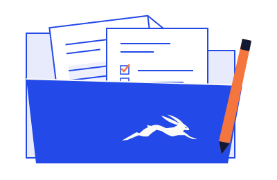

LIEBRE LAW
LIEBRE LAWWyatt · Central Falls, Rhode Island
Ayuda legal para detenidos en Wyatt
Si su familiar está detenido por inmigración en Donald W. Wyatt Detention Facility, podemos revisar su caso, explicar las opciones y ayudar con los pasos para regresar a su país si esa es su decisión.
Soy John Hare, abogado de inmigración. Si las audiencias se aplazan o su familiar sigue detenido después de recibir una orden, podemos evaluar qué gestiones corresponden ante la corte y ante ICE.
No se garantiza una fecha de salida. Los tiempos dependen de la corte, ICE, los documentos de viaje y otros factores del caso.
Atención en español e inglés. Servicios con honorarios; el trabajo y los pagos se acuerdan por escrito.
Ubicar el caso y el centro
Donald W. Wyatt Detention Facility está en Central Falls, Rhode Island. Liebre Law es un despacho privado e independiente; no somos el centro de detención ni ICE.
Para información del centro, consulte su página oficial. Para ayuda legal, comuníquese directamente con John Hare. Si hubo un traslado, díganos el centro actual.
La lista administrativa de EOIR incluye este centro bajo Chelmsford. Confirmamos la corte y las fechas en los documentos de cada caso.
Si el caso sigue en corte
Revisamos el expediente, la próxima audiencia y lo que la persona detenida quiere hacer. Cuando corresponda, podemos solicitar que se adelante la audiencia y realizar las gestiones acordadas ante la corte.
El juez decide sobre la solicitud. Una audiencia más cercana no asegura un vuelo ni una salida inmediata.
Si ya hay una orden de deportación
Confirmamos qué orden existe, si está firme y qué falta para su ejecución. Podemos comunicarnos con el oficial de deportación de ICE/ERO, preguntar por los documentos pendientes y ayudar a coordinar con la familia o el consulado cuando sea necesario.
ICE lleva a cabo la deportación. El abogado puede gestionar y dar seguimiento, pero no controla los vuelos ni la fecha de salida.
Si ya firmó para regresar
Decir «firmé mi salida» no nos permite saber qué trámite se hizo. Necesitamos revisar el documento y cualquier decisión de la corte.
La salida voluntaria y una orden de deportación son distintas. Antes de pedir una orden o renunciar a una opción, hablamos directamente con la persona detenida sobre sus alternativas y las consecuencias. La decisión de regresar es suya.
Para la primera conversación
Cuéntenos dónde está detenido su familiar y qué les han dicho sobre su regreso. Si los tiene, reúna:
- El aviso de la próxima audiencia o la decisión del juez.
- Los documentos que firmó para salir del país.
- Los mensajes de ICE y los datos del oficial asignado.
- Información sobre su pasaporte o documentos de viaje.
No necesita tener todo para escribirnos. Evite enviar números de identificación o documentos sensibles en el primer mensaje; le indicaremos cómo compartirlos.

Preguntas frecuentes
¿Puede ayudar a que regrese más pronto?
Podemos revisar qué está retrasando el caso y actuar sobre los pasos que correspondan: una solicitud a la corte, documentos pendientes o comunicación con ICE. Algunas demoras no se resuelven con la intervención de un abogado. No prometemos que contratar el servicio reduzca la detención.
¿Cuánto cuesta?
Depende de si hace falta trabajo en corte, coordinación con ICE o ambas cosas. Antes de comenzar, acordamos por escrito las etapas, qué incluye cada una y los honorarios. Si surge trabajo adicional, explicamos las opciones y su costo.
¿Puede la familia iniciar el contacto?
Sí. Un familiar puede escribirnos para explicar la situación. También necesitamos hablar directamente con la persona detenida para conocer sus deseos, explicarle las opciones y acordar la representación.
¿Y si todavía no está seguro de regresar?
Díganoslo. Primero debemos hablar de sus opciones y de las consecuencias de salir del país. Este servicio se dirige a quienes quieren regresar después de recibir esa orientación; no sustituye una evaluación individual de su caso.
Hablemos de lo que está pasando.
Díganos en qué centro está detenido su familiar, si ya hubo una decisión y cuál es la principal demora. John Hare puede evaluar cómo ayudar. También nos sirve saber si nos encontró en Google o por recomendación de otra persona.
Una consulta o un mensaje no presenta una solicitud ante la corte ni cambia las fechas de su caso. La representación se acuerda por escrito.
Fuentes y alcance de esta información
- Donald W. Wyatt Detention Facility: información oficial / official information
- EOIR: lista administrativa de cortes / court administrative list
- EOIR, § 4.10(b): solicitud para adelantar una audiencia
- EOIR: salida voluntaria
- USAGov: proceso de deportación y función de ICE
Información del centro revisada el 22 de noviembre de 2026. Información general revisada el 20 de noviembre de 2026. La situación y los documentos de cada persona requieren revisión individual.